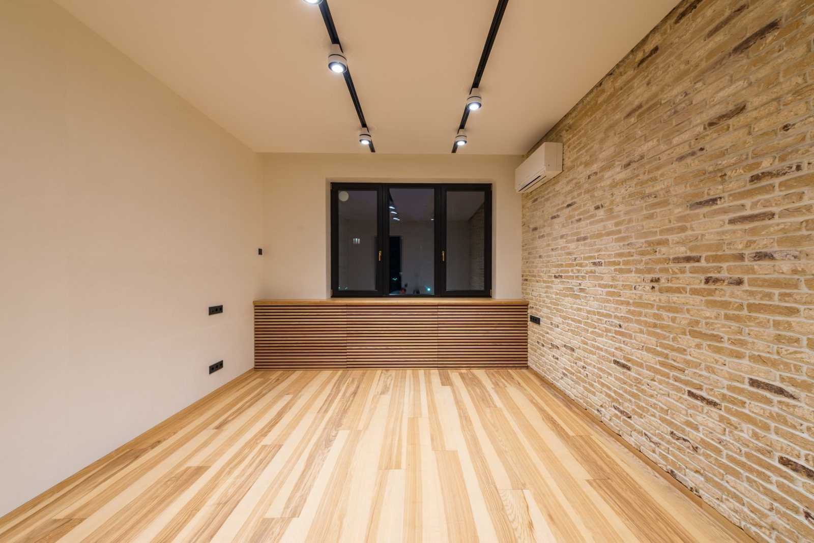
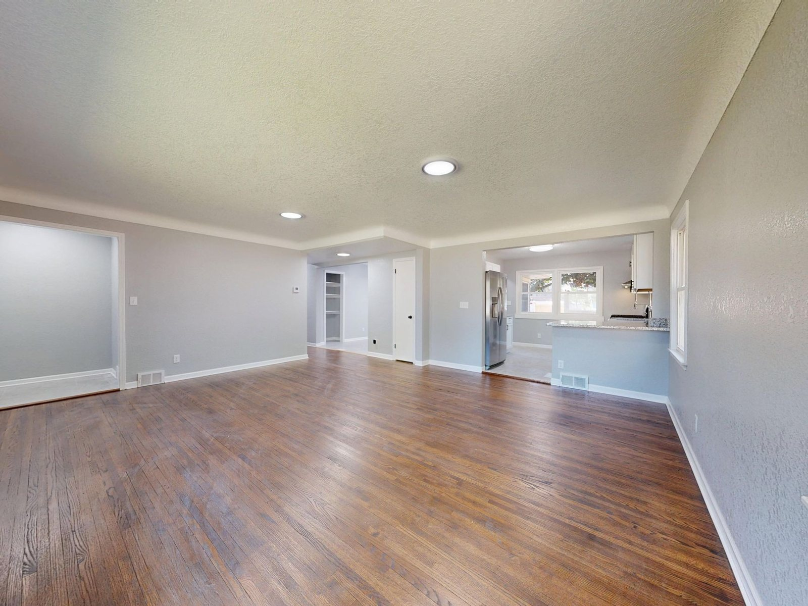
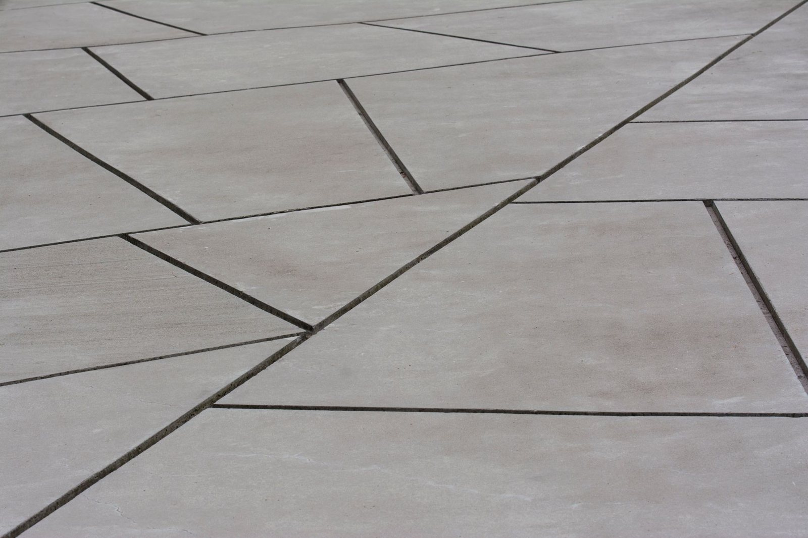
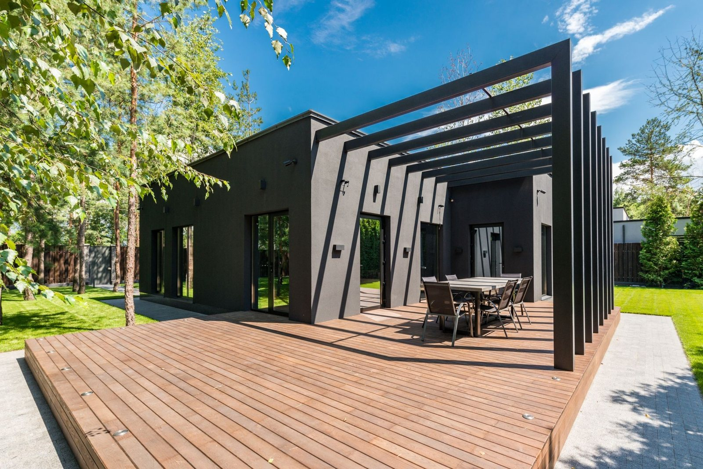
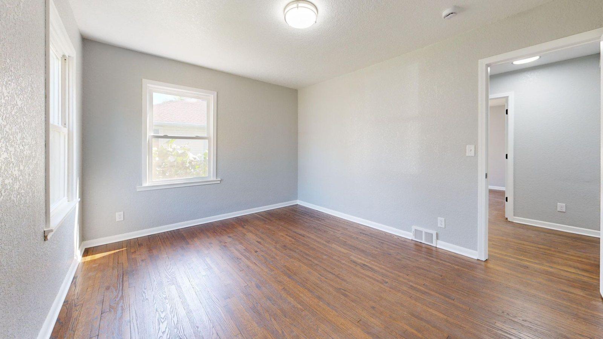
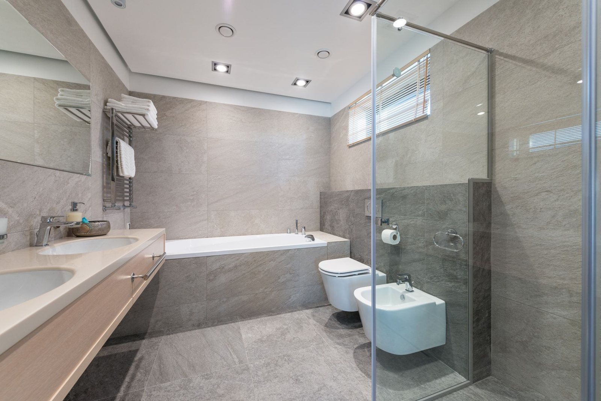
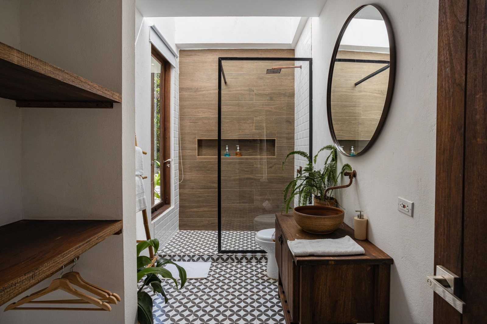

Włocławek i okolice · od 2018
Remonty i wykończenia
Wykończenia wnętrz, płytki na ścianach i schodach, tarasy z płyt i z drewna. Każde zlecenie zaczynam od oględzin na miejscu, więc cenę znasz przed rozpoczęciem prac, a nie po nich.
Umów oględziny
Czym się zajmuję
Usługi Budowlane Marek Lubecki to remonty i wykończenia we Włocławku i okolicach: mieszkania doprowadzane do porządku od surowych ścian, płytki na ścianach, podłogach i schodach, tarasy z płyt i z drewna. Firma działa od 2018 roku. Biorę cały remont albo jeden etap, a cenę podaję po oględzinach, zanim zacznę pracę.
Realizacje
Zakres prac
Prowadzę remont od pierwszych oględzin aż po odbiór.

Wykończenia wnętrz Od surowych ścian do wnętrza, w którym można zamieszkać. Mokre i suche etapy we właściwej kolejności. Układanie płytek
Łazienki, kuchnie i podłogi, także duże formaty, z równą fugą od pierwszego do ostatniego rzędu.
Układanie płytek
Łazienki, kuchnie i podłogi, także duże formaty, z równą fugą od pierwszego do ostatniego rzędu.

Schody i tarasy z płyt Stopnie przed wejściem i tarasy przy domu, ułożone ze spadkiem, żeby woda spływała, a nie stała.
Tarasy z drewna Konstrukcja na legarach, pod spodem warstwa, która nie przepuszcza chwastów.
Remonty mieszkań Mieszkanie z rynku wtórnego: skucie, ściany, gładzie i malowanie u jednego wykonawcy.
„Polecam rzetelnie”

Opinie klientów
- Oględziny przed wycenąprzyjeżdżam i mierzę
- Cały remont lub etapjak potrzebujesz
- Włocławek i okolicedojazd do klienta
- Firma od 2018 rokuwpis w CEIDG